A coffee table can go from beautifully styled to completely chaotic in about five minutes flat. You put down a book, a candle, the remote, a coffee cup, and suddenly the whole surface has turned into a small storage crisis.
The good news is that you don't need a huge table or expensive accessories to fix this. You just need a system that gives everything a place while keeping the table looking intentional.
The best coffee table setups tend to balance style, function, and a little breathing room. So let's look at what actually works, why some arrangements feel cluttered almost immediately, and how to organize your own table without turning it into a showroom nobody's allowed to touch.
None of these seventeen ideas require buying a new table or committing to a single rigid formula. Most of them are small, reversible changes you can try this afternoon and keep only if they actually make your life easier.

Why Coffee Tables Get Cluttered So Easily
Coffee tables attract everyday stuff because they sit right in the middle of the living room. Remotes, magazines, glasses, chargers, snacks, books, and random objects all naturally land there.
The problem starts the moment everything just stays.
A well-organized coffee table should still give you enough room to actually use it. You should be able to set down your morning coffee without relocating six decorative objects first.
Visual breathing room matters here too. After styling a table, removing one or two items almost always makes the whole arrangement feel cleaner. If something doesn't serve a purpose and doesn't add anything visually, it probably doesn't need prime real estate on the table.
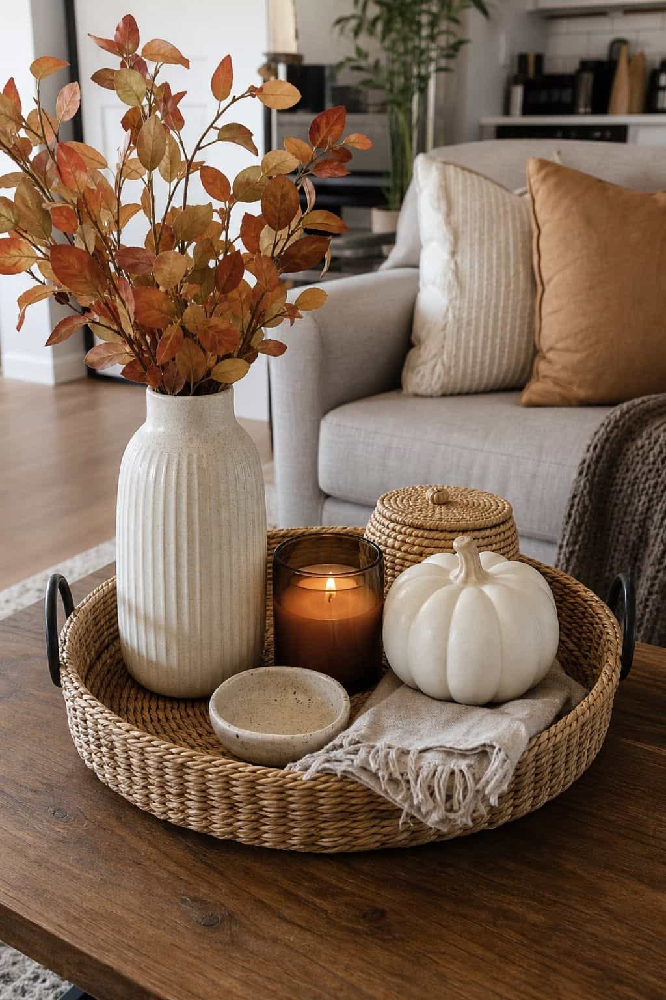
How to Organize a Coffee Table Without It Looking Cluttered
Start by thinking in zones instead of individual objects.
A tray can hold the smaller items. A stack of books can create height. A bowl can collect the little things. A candle or a vase can add one decorative focal point.
This approach creates visual boundaries, which makes a table feel organized even while holding several things at once.
Keeping the center, or at least one major area, relatively open matters just as much. You don't need to cover every inch. Empty space actually makes the decorative pieces that are there stand out more, and it keeps the whole setup easy enough to use without needing an instruction manual.
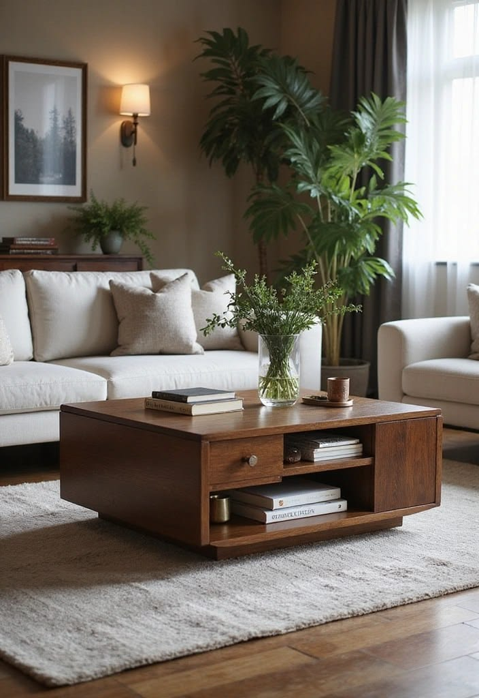
17 Coffee Table Organizing Ideas That Actually Work
1. Rotate a Few Small Elements by Season
You don't need to completely redesign the living room every few months.
Change a handful of small elements instead. Fresh greenery works well in spring, warm ceramics or dried branches suit autumn, and candles with textured accessories carry a table through winter.
Keep the main tray, bowl, and books consistent year-round, then rotate just one or two accents. It saves money and keeps the room feeling fresh without creating a whole new storage problem.
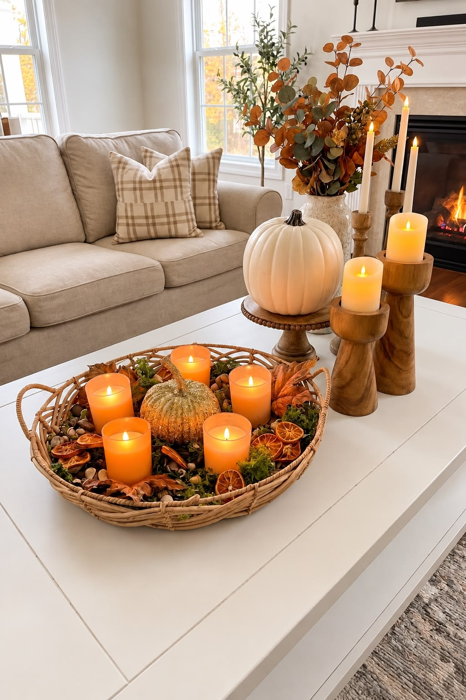
2. Leave One Section Completely Empty
This might sound strange for a post about organizing, but empty space genuinely counts as organization.
Leave one section of the table open for drinks, snacks, books, or whatever the table actually gets used for day to day. A coffee table exists for living, not just for photographing.
A useful test: could someone sit down right now and comfortably set a coffee cup down? If the answer's no, something needs to go.
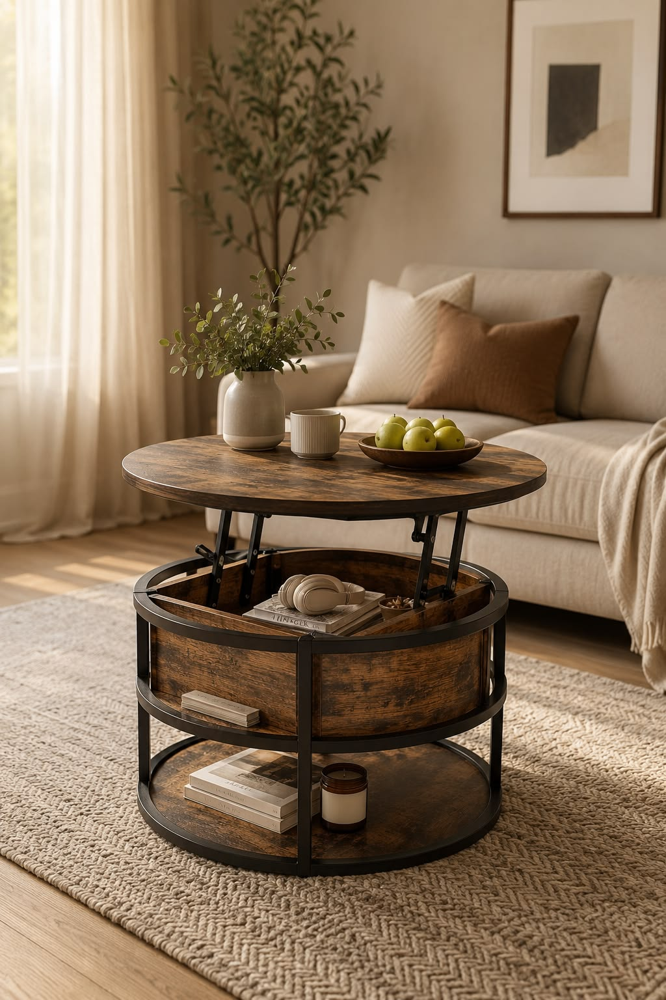
3. Add Texture With Natural Materials
Organization doesn't have to look sterile.
Rattan, wood, ceramic, stone, linen, and woven fibers all introduce texture while keeping an arrangement visually interesting.
Mixing one hard material with something softer or more organic tends to work especially well, a wooden tray paired with a ceramic bowl and a linen-covered book, for instance. That small contrast makes the whole arrangement feel noticeably more layered.
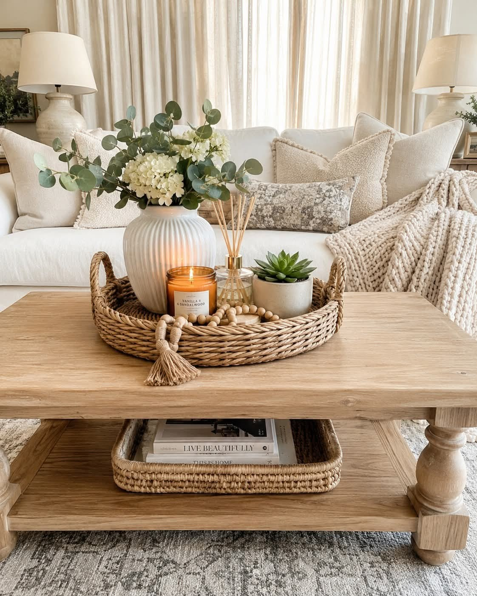
4. Organize Around One Focal Object
Sometimes the best organization comes from having less, not more.
Choose one object that genuinely deserves attention, a sculptural vase, a large bowl, a beautiful candle, an interesting decorative piece, and build the rest of the arrangement around it.
This works particularly well in minimalist living rooms, since it gives the eye one clear place to land. The smaller accessories around it are what actually make a simple arrangement read as deliberate rather than sparse.
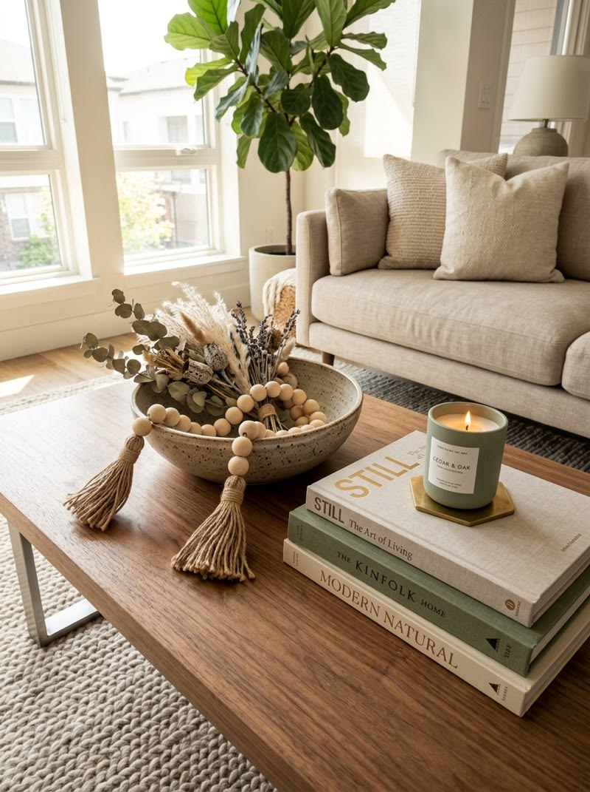
5. Give Magazines Their Own Spot
Magazines can turn into a messy pile faster than almost anything else on a coffee table.
Instead of spreading them across the surface, create one intentional stack, or use a slim magazine holder nearby. If they're staying on the table itself, a handful of current issues is plenty. Nobody needs every magazine purchased since 2021 sitting there as evidence.
Editing the stack regularly takes less than a minute and keeps the whole table looking fresh.
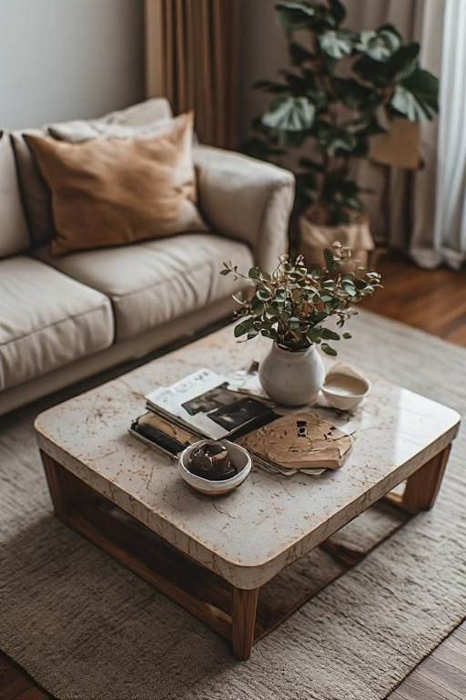
6. Use a Tray on Top of an Ottoman
If an upholstered ottoman stands in for a traditional coffee table, a firm tray creates the stable surface it's missing.
The tray can hold books, a candle, a bowl, and a coffee cup, all the same things a regular coffee table would carry.
This setup keeps the ottoman flexible too. Lift the tray off whenever it needs to double as an actual footrest. The tray is really what makes the whole arrangement look effortless, since it gives every object one shared visual boundary.
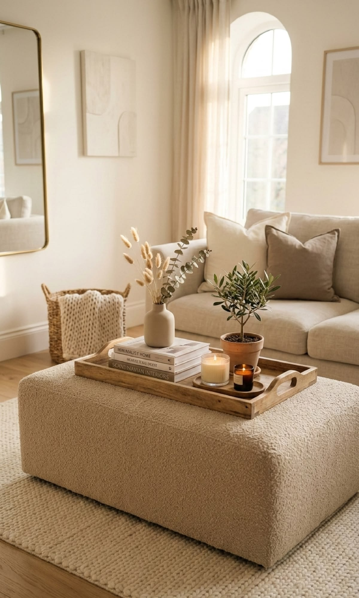
7. Choose a Low Vase Over a Tall Arrangement
A vase can make a coffee table feel finished, but height matters more than people expect.
A very tall arrangement blocks sightlines across the living room almost instantly. A low, wide vase delivers the same decorative impact without creating an obstacle in the middle of the room.
Eucalyptus, branches, dried stems, or fresh flowers all work depending on the style. For everyday living, low and simple arrangements tend to look polished without demanding constant attention.
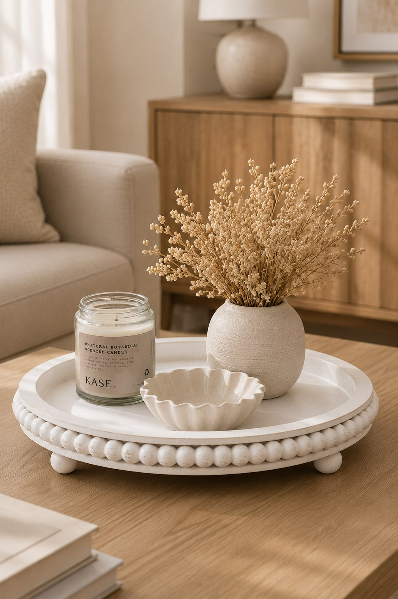
8. Divide the Table Into Three Simple Zones
When placement feels like a struggle, try dividing the table visually into three areas instead of one big arrangement.
A book-and-decorative-object zone, a tray-and-bowl zone, and one fully open area for drinks and everyday use is a solid starting formula. This works particularly well on a rectangular coffee table.
The key is keeping the three zones visually connected. Repeating one material, color, or shape across all three keeps the table feeling intentional rather than randomly split up.
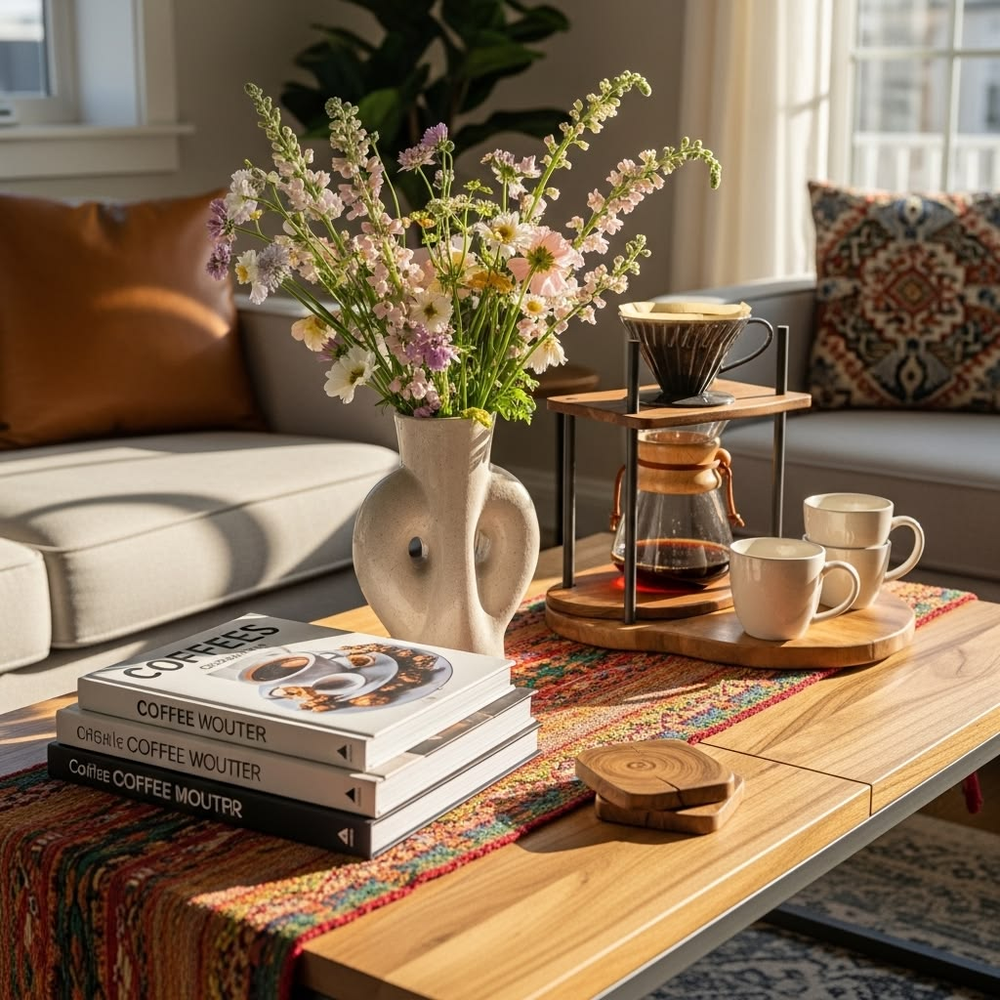
9. Make the Coasters Part of the Styling
Coasters don't need to look like an afterthought grabbed from a kitchen drawer.
A coordinated set, kept together on a small tray or beside a stack of books, reads as intentional instead. Stone, wood, marble, ceramic, and leather all work depending on the rest of the decor.
Coasters that actually visually belong to the room become part of the overall styling rather than something that needs to be disguised or hidden away.
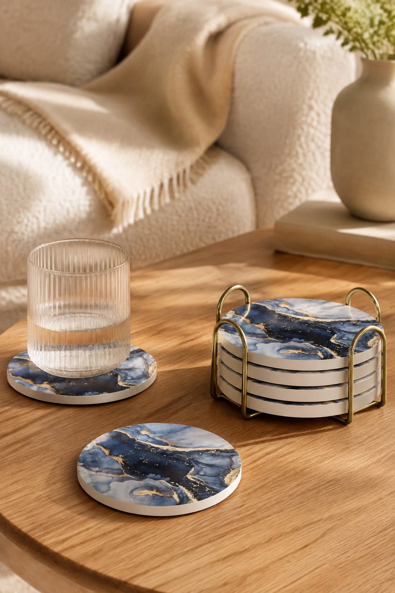
10. Add a Decorative Box for Hidden Storage
Sometimes the easiest fix is just somewhere to hide things.
A decorative box stores items without putting them on display, chargers, remote controls, notebooks, or any other living room accessories that don't need to be seen.
Boxes with interesting texture, wood, rattan, or woven fiber, work especially well, since a beautiful box becomes part of the styling itself instead of something you're trying to conceal.
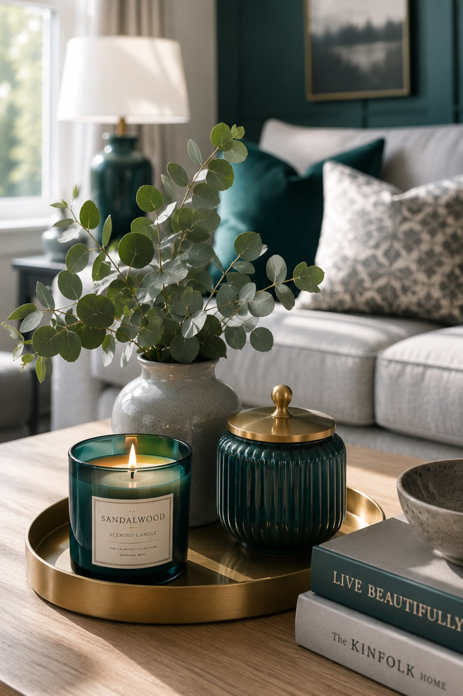
11. Try a Two-Tier Tray
A two-tier tray earns its spot especially well on a table that doesn't have much built-in storage.
The upper level can hold the decorative items, while the lower level handles practical pieces like remotes, coasters, or magazines.
Just don't fill both levels completely. Negative space still matters here, otherwise you've basically built a tiny shelf on top of the coffee table instead of an organized surface.
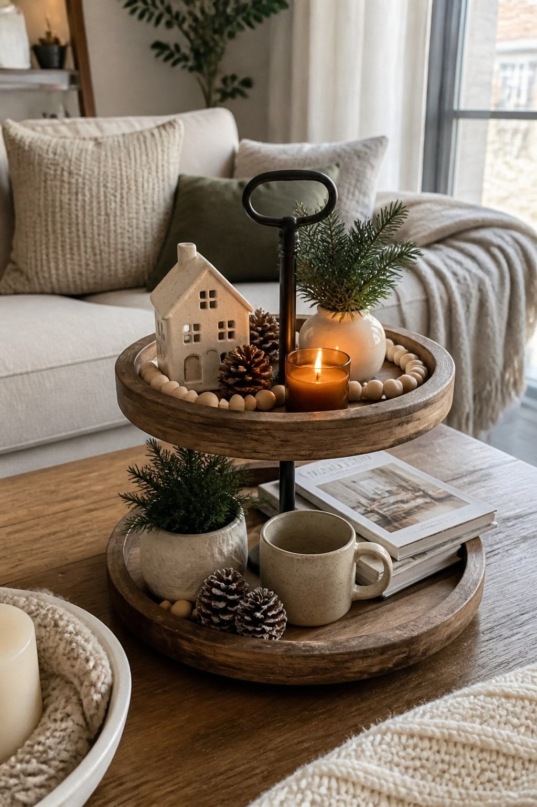
12. Use a Small Bowl for the Tiniest Items
A tiny bowl handles exactly the kind of things that otherwise create visual noise.
Coins, earbuds, matches, small accessories, all of it has somewhere to go instead of scattering across the surface.
Choosing a bowl that complements the room, rather than one that looks like an office supply container, keeps it feeling like decor instead of clutter control. Handmade ceramic bowls work especially well, since they add texture while still doing the practical job.
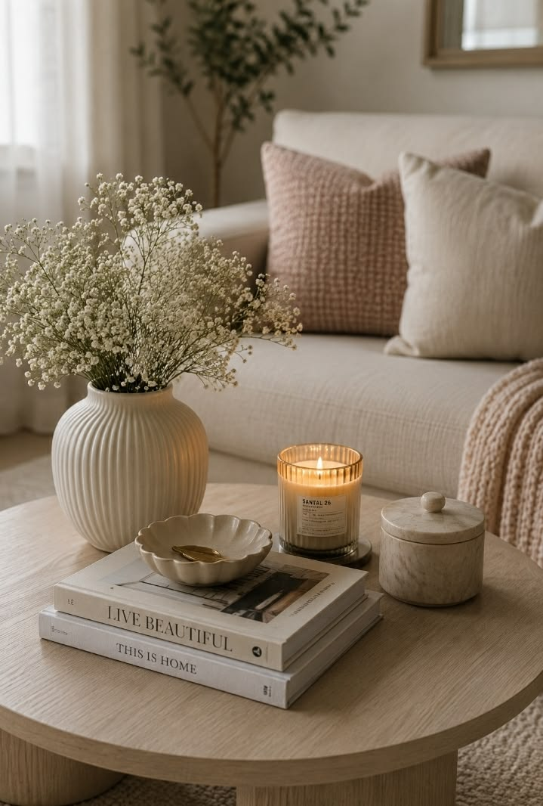
13. Give the Remotes One Dedicated Spot
Remote controls might be the single fastest way to ruin an otherwise beautiful coffee table.
Instead of letting them land wherever, give them one designated location. A small decorative box or lidded container keeps them nearby while staying visually quiet.
With multiple remotes in the house, resist spreading them across different random hiding spots. One dedicated container works far better than several scattered ones.
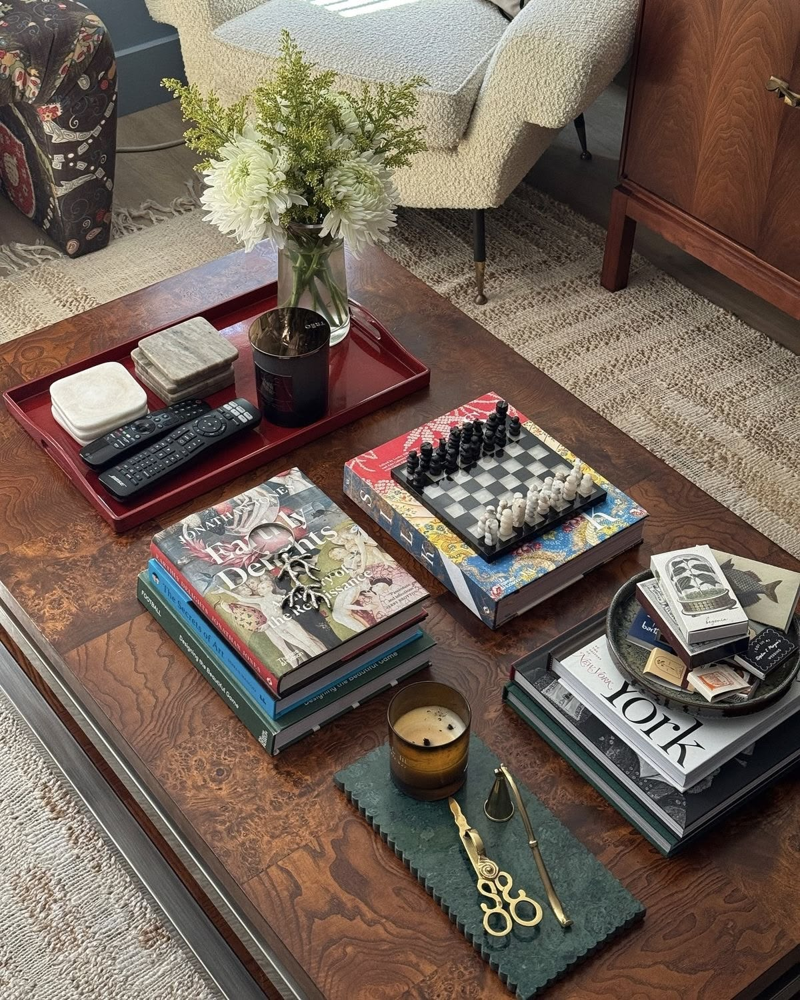
14. Combine a Tray and a Bowl Together
There's no real reason to choose between a tray and a bowl when they work even better together.
Place a tray slightly off-center, add a bowl inside it, then tuck one or two decorative pieces around the bowl. That builds a simple hierarchy: the tray defines the zone, the bowl handles storage, and the decorative piece adds personality.
This layered setup is useful whenever a table needs to look styled without any single object feeling isolated on its own.
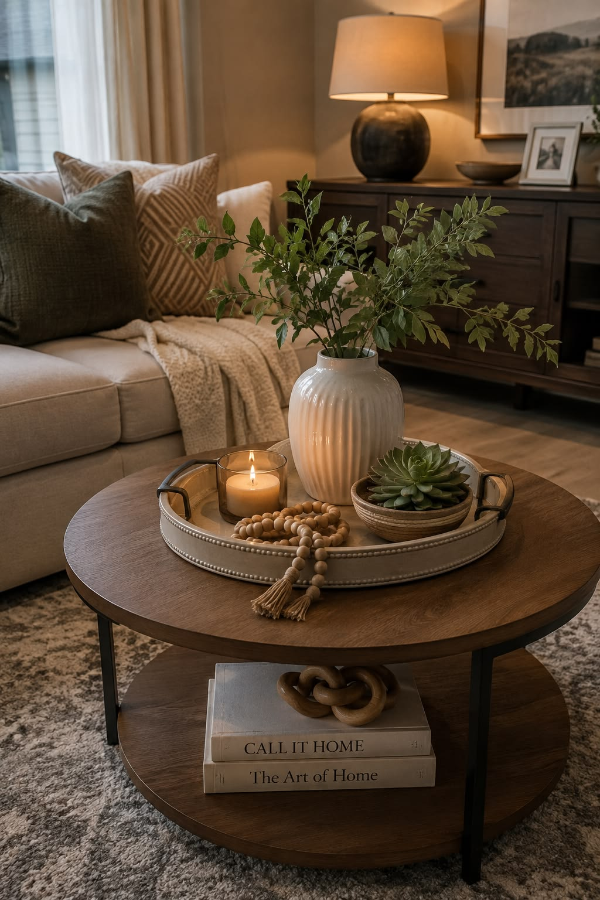
15. Add a Bowl for Everyday Clutter
A bowl gives all those tiny stray objects somewhere to actually go.
Remote controls, keys, hair ties, matches, anything that somehow migrates onto every available surface in the house eventually ends up here instead.
A shallow ceramic, wooden, or stone bowl works especially well for this. In a household that uses the coffee table constantly, something durable and easy to move matters more than something merely pretty.
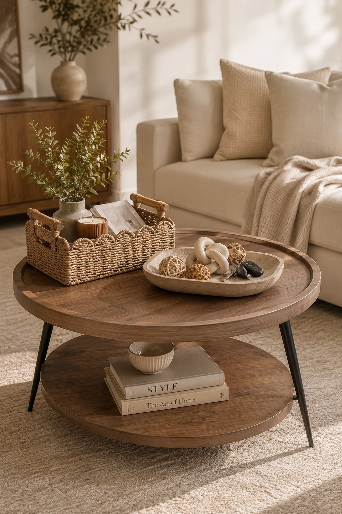
16. Stack Coffee Table Books by Size
Coffee table books manage to organize and decorate at the same time, which is a pretty good deal for very little effort.
The largest book goes at the bottom, working up toward smaller ones. Two or three books is usually enough to create real height without the stack looking excessive.
Books with neutral or complementary covers tend to work best, since they fold into the room's existing color palette. A small decorative object on top finishes it off, as long as the stack stays low enough that it doesn't start competing with the television across the room.
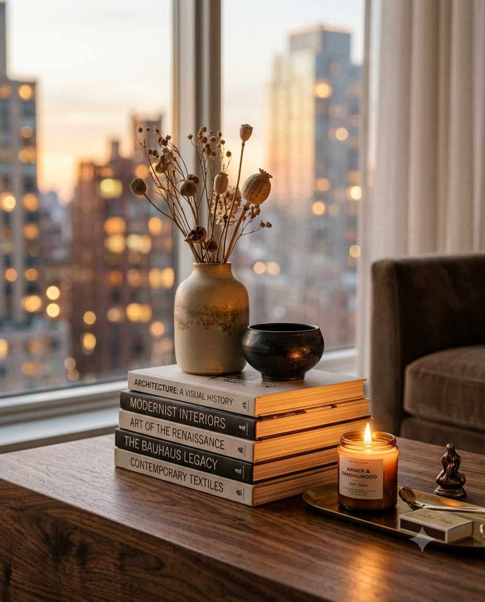
17. Use a Large Tray to Create One Organized Zone
A large tray remains one of the most reliable organizing tricks there is, since it instantly gives smaller objects a home.
Instead of a candle, remote, coaster, and decorative object scattered across the table, all of it goes inside the tray instead. Wood works beautifully for warm interiors, while stone, metal, or woven trays create a different feel entirely.
Leaving some open space inside the tray itself matters too. A completely packed tray just creates clutter inside a smaller box. One candle, one small bowl, one decorative object, and one remote control is plenty, organization without turning the tray into a junk drawer.
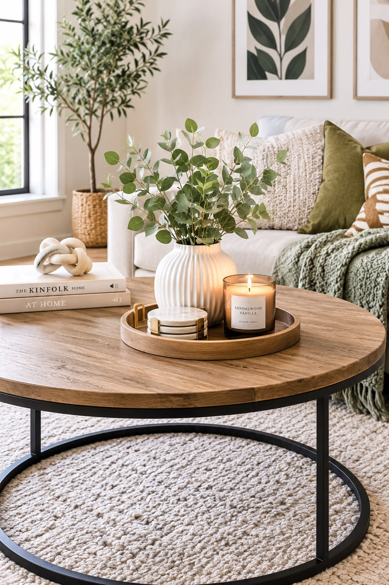
How Many Things Should Actually Be on a Coffee Table?
There's no magic number here, but three to five main elements is a good place to start.
A tray, two books, a bowl, and a candle covers it well. Or, for something simpler, a low vase, a book stack, and one decorative object does the same job with less.
Table size matters too. A large rectangular table can handle more visual weight than a small round one. The actual goal isn't a strict formula, it's creating enough visual interest without making the table difficult to actually use.
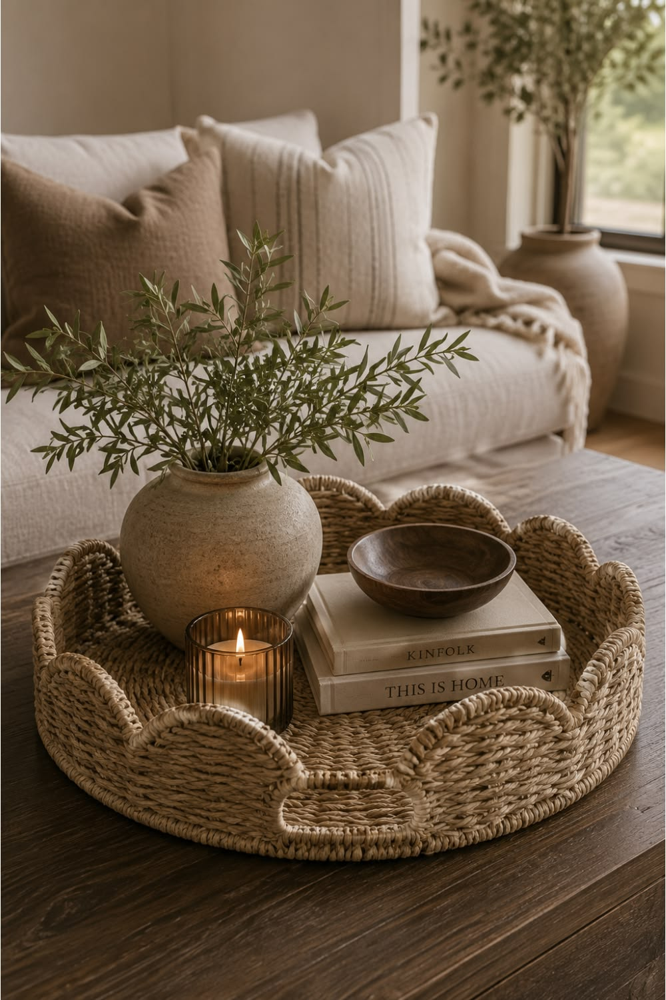
What to Avoid When Organizing a Coffee Table
A handful of habits can make even genuinely beautiful furniture look messy.
Covering Every Inch
More decoration doesn't automatically make for a better arrangement. The eyes need somewhere to rest.
Too Many Small Objects
Tiny accessories create visual noise fast. Grouping them inside a tray or bowl solves this almost immediately.
Excessive Height
A tall vase might look striking on its own, but it becomes an annoying obstruction the moment someone sits down on the sofa.
Too Many Colors
A simple color relationship works best. Repeating one or two colors already in the room keeps the coffee table feeling connected to the rest of the design, instead of like a separate display.
Decorative Pieces That Never Get Used
If something constantly has to be moved just to use the table, it's worth asking whether it actually belongs there. A home should support daily habits, not fight against them.
Styling a Coffee Table From Scratch
Starting from a completely empty coffee table, the process can stay surprisingly simple.
Begin with a large tray slightly off-center, then add two coffee table books in different sizes. A small bowl goes on or beside the books depending on the table's size, and one candle or sculptural object adds height. A low vase or small plant finishes the arrangement.
Then, one more thing gets removed. Yes, really. That final edit is usually what makes the whole arrangement feel more expensive than it actually was. The best coffee table arrangements rarely announce how much effort went into them. They just look natural.
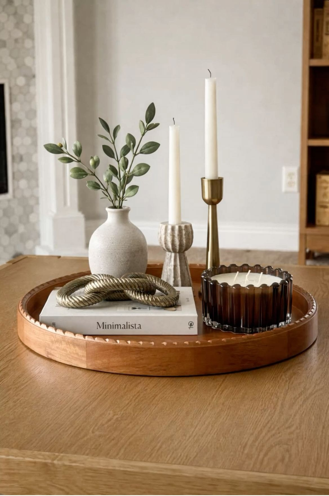
Final Thoughts on Coffee Table Organizing
The best coffee table organizing ideas never force a choice between a beautiful living room and a practical one.
Trays create zones. Bowls and boxes control the small clutter. Books stack up for height. Keeping decorative pieces low preserves sightlines, and leaving enough open space protects the table's actual everyday use.
Most importantly, there's no pressure to fill the whole table. Sometimes the smartest styling decision is putting one more thing away.
A coffee table should hold a coffee cup occasionally. It shouldn't have to hold an entire personality, three remotes, twelve magazines, a candle collection, and every decorative object in the house all at once. Keep it useful, keep it personal, and leave yourself a little empty space.